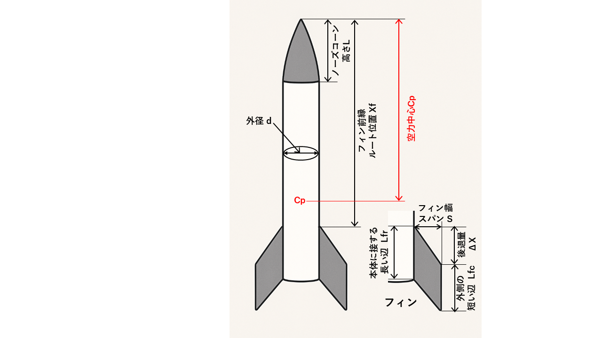

ノーズコーン高さ L、外径 d、フィン位置 Xf、フィン寸法 Lfr / Lfc / S
使用している理論式（Barrowman 法）
ノーズ
XN = (2/3) × L
(CNα)N = 2
フィン幾何
XR = Xt − Xf = ΔX
Δxmc = XR + (Lfc − Lfr)/2
Lf = √( S² + Δxmc² )
フィンの法線力係数
λ = 2 Lf / (Lfr + Lfc)
(CNα)F =
[ 4 n (S/d)² ] / ( 1 + √(1 + λ²) )
ここで R = d/2 （ロケット半径）
n = 3,4 : Kfb = 1 + R / (S + R)
n = 6 : Kfb = 1 + 0.5 × R / (S + R)
(CNα)F,b = Kfb(CNα)F
フィンの空力中心位置
XFcp = Xf
+ (XR/3) · (Lfr + 2Lfc)/(Lfr + Lfc)
+ (1/6) · [ (Lfr + Lfc) − (LfrLfc)/(Lfr + Lfc) ]
ロケット全体の空力中心
Xcp =
{ (CNα)N XN +
(CNα)F,b XFcp } /
{ (CNα)N + (CNα)F,b }